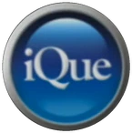
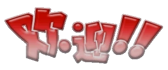
iQue Player 神游机
Nintendo’s console for mainland China, launched in November 2003: a whole Nintendo 64 built into the controller, with games loaded onto a flash card at a kiosk in the shop. I have one, and CyStation began the day after I researched it in March 2025.
The console 神游机
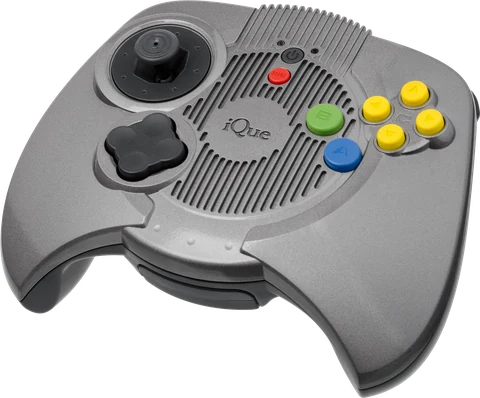
China had banned home game consoles in 2000, and pirated cartridges were everywhere. So in December 2002 Nintendo set up iQue with Wei Yen, who had helped create the Nintendo 64 at Silicon Graphics.
The iQue Player hides the whole N64 inside the controller, which plugs straight into the TV. Every game is locked to one console by encryption from BroadOn, another of Wei Yen’s companies.
The card and the depot 神游卡
There are no cartridges. Games live on the iQue Card, 64 MB of flash memory, which you took to an iQue Depot kiosk in a shop to load new ones. From October 2004, iQue@Home let you buy games on a PC and copy them to the console over USB, until the service closed at the end of 2016.
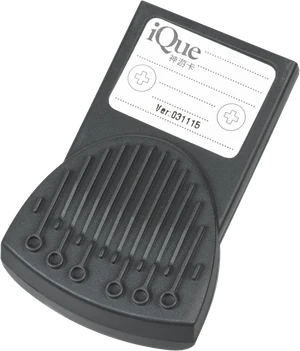
Inside my iQue Card
The iQue Card holds the console’s system software, menus and all, as well as its games. These pictures come from the NAND flash on mine.
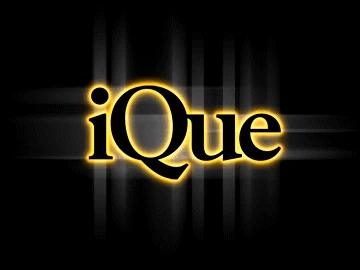
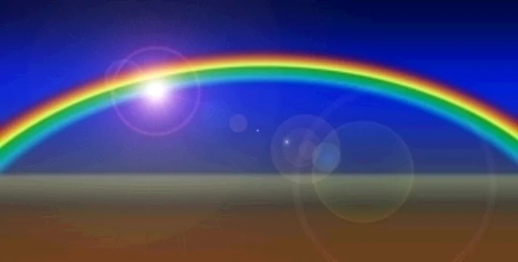
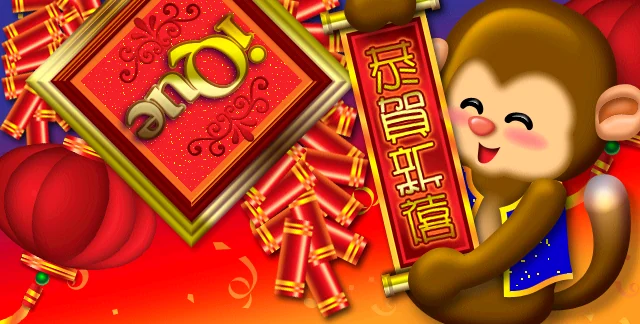
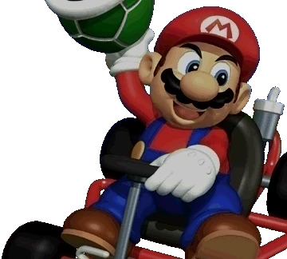
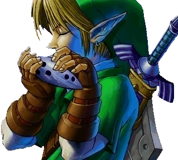
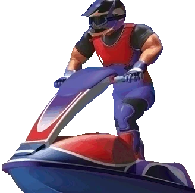
There’s a 生日快乐! (Happy birthday!) in there too. It takes over from the 欢迎!! (Welcome!!) at the top of this page every 18 November, the iQue Player’s birthday.
Homebrew 游戏专区
In 2018, researchers found holes in the iQue Player’s security, which opened it up to homebrew. These are ports of games it never had, starting with GoldeniQue.
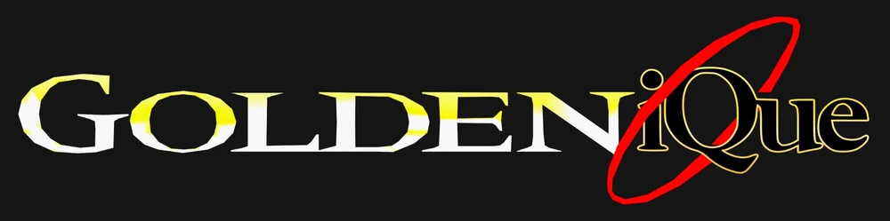
GoldenEye 007 on the iQue Player · a homebrew port
GoldenEye 007 never came out on the iQue Player. GoldeniQue is a finished homebrew port that runs it there.
This page borrows the look of iQue’s own website from 2004.